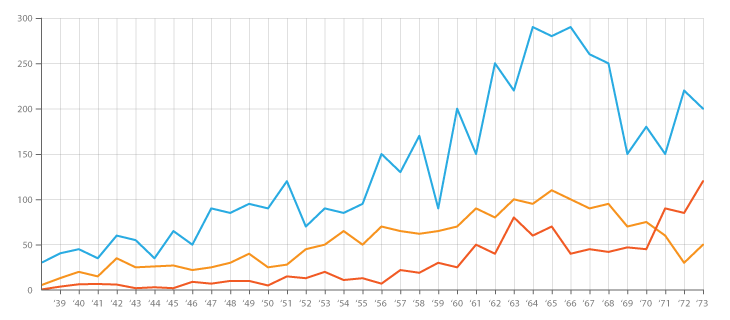

<mat-toolbar color="primary">
  <div class="btn">
    <button mat-button *ngIf="auth.isAuthenticated" (click)="auth.logoutUser()">Logout</button>
    <!-- <button mat-button (click)="userData()">profile</button> -->
    <button mat-button [matMenuTriggerFor]="modules">Module</button>

    <mat-menu #modules="matMenu">
      <button mat-menu-item>SafetyBeat</button>
      <button mat-menu-item>Field Communication</button>
    </mat-menu>
  </div>
</mat-toolbar>
<div class="grid-container">
  <mat-grid-list cols="2" rowHeight="350px">
    <mat-grid-tile *ngFor="let card of cards | async" [colspan]="card.cols" [rowspan]="card.rows">
      <mat-card class="dashboard-card">
        <mat-card-header>
          <mat-card-title>
            {{card.title}}
            <button mat-icon-button class="more-button" [matMenuTriggerFor]="menu" aria-label="Toggle menu">
              <mat-icon>more_vert</mat-icon>
            </button>
            <mat-menu #menu="matMenu" xPosition="before">
              <button mat-menu-item>Expand</button>
              <button mat-menu-item>Remove</button>
            </mat-menu>
          </mat-card-title>
        </mat-card-header>
        <mat-card-content class="dashboard-card-content">
          <div></div>
        </mat-card-content>
      </mat-card>
    </mat-grid-tile>
  </mat-grid-list>
</div>